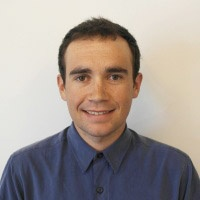

About me:

I work for the Center for Watershed Sciences at UC Davis.
I'm a GIS project specialist that works on a variety of projects related to water in California.
Prior to starting at the Center for Watershed Sciences, I worked at
Sierra Streams Institute in Nevada City, CA.
I attended Bowdoin College in Brunswick, Maine and graduated in 2011 with a BA in biology (honors)
and environmental studies.